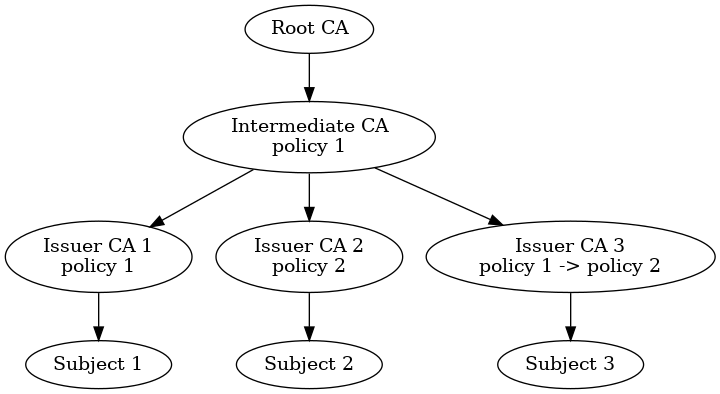

X509 Policies

Ich wollte schon lange einmal etwas über einen oft missverstandenen und auch ignorierten Aspekt von (x.509) PKI schreiben: Policies
Policies beschreiben grob gesagt, unter welchen Umständen Zertifikate ausgestellt und benutzt werden können. Die Validierung von Signaturen - und damit Zertifikaten - kann ohne deren Berücksichtigung stattfinden oder sie einschließen. Werden sie eingeschlossen bedeutet das, das alle Zertifikate von dem zu Prüfenden bis hin zu einem Trust-Anchor dieselbe Policy enthalten müssen. Einzige Ausnahme: Ein Zertifikat der Kette enthält ein Mapping zwischen zwei Zertifikaten. Ab diesem Punkt sind beide Policies gültig. Dieser Sachverhalt ist insbesondere bei Cross-Signing enorm wichtig: Damit verkoppelt man ja zwei bis dahin unabhängige PKIs. Es ist sehr unwahrscheinlich, dass beide dieselbe Policy verwenden - durch solche Mappings wird es dann möglich, die Policies der einen PKI auf äquivalente der anderen abzubilden.
Für die praktische Ansicht des Ganzen habe ich eine Test-CA erzeugt, die drei Issuing CAs beinhaltet: Damit werden drei Trust Chains etabliert: In Trust Chain 1 existiert ein und dieselbe Policy durchgehend. In Trust Chain 2 ändert sich die Policy innerhalb der Chain und in Trust Chain 3 ändert sich die Policy zwar auch, jedoch werden die beiden in einer Intermediary CA mittels eine Policy Mappings aufeinander abgebildet. Die folgende Graphik soll die Architektur der PKI betreffend der PKI veranschaulichen:

Bei den drei Issuing CAs handelt es sich um CAs, die unter anderem Zertifikate für die Absicherung von E-Mails mittels S\MIME erzeugen können. Die Root-CA der PKI hat keine Policy - und das bedeutet damit auch, dass alle Policies gültig sind und akzeptiert werden. Die Intermediary CA direkt darunter führt die Policy organization-validated ein, die auch die Issuing CA 1 beibehält.
Issuing CA 2 weicht davon ab und operiert mit Policy smime.
Issuing CA 3 weicht zwar ebenso wie Issuing CA 2 ab, allerdings wird hier ein Mapping zwischen organization-validated und smime. vereinbart.
Zu Testzwecken wurden nun mit jeder Issuing CA Testzertifikate erstellt und damit (und dem korrespondierenden Private Key) auf der Kommandozeile Dateien mittels S\MIME signiert:
openssl smime -sign -in msg.eml -text -out msg_pol_subj1.p7s -signer subj1.pem -certfile ca1-ca-chain.pem -inkey subj1.key
openssl smime -sign -in msg.eml -text -out msg_pol_subj2.p7s -signer subj2.pem -certfile ca2-ca-chain.pem -inkey subj2.key
openssl smime -sign -in msg.eml -text -out msg_pol_subj3.p7s -signer subj3.pem -certfile ca3-ca-chain.pem -inkey subj3.key
Diese Nachrichten wurden anschließend verifiziert:
openssl smime -verify -in subj1.p7s -CAfile ca1-ca-chain.pem
openssl smime -verify -in subj2.p7s -CAfile ca2-ca-chain.pem
openssl smime -verify -in subj2.p7s -CAfile ca2-ca-chain.pem
openssl smime -verify -in subj3.p7s -CAfile ca3-ca-chain.pem
All diese Validierungen waren erfolgreich. Dies daher, da per default die Prüfungen der Policies nicht stattfindet. Aktiviert man die Prüfungen jedoch, ergibt sich ein anderes Bild: Die folgenden Kommandos prüfen die Signaturen erneut, schreiben aber vor, dass für die erfolgreiche Validierung die Policies geprüft werden müssen. Dafür muss mindestens eine Policy explizit angegeben werden. Der erste und der letzte der im Folgenden angegebenen Aufrufe verifiziert die Signatur erfolgreich, diejenigen dazwischen schlagen jedoch fehl - Sie stellen den Versuch dar, die Prüfung mit der Policy der Intermediary CA durchzuführen und mit der des Subject-Zertifikats. Da aber zwischen beiden kein Mapping existiert, kann das nicht funktionieren und damit schlägt die Validierung fehl:
openssl smime -verify -policy 2.23.140.1.2.2 -policy_check -inhibit_any -in subj1.p7s -CAfile ca1-ca-chain.pem -explicit_policy
openssl smime -verify -policy 2.23.140.1.2.2 -policy_check -inhibit_any -in subj2.p7s -CAfile ca2-ca-chain.pem -explicit_policy
openssl smime -verify -policy 2.23.140.1.5 -policy_check -inhibit_any -in subj2.p7s -CAfile ca2-ca-chain.pem -explicit_policy
openssl smime -verify -policy 2.23.140.1.2.2 -policy_check -inhibit_any -in subj3.p7s -CAfile ca3-ca-chain.pem -explicit_policy
Interessant ist noch die Tatsache, dass man für diese Prüfung mit OpenSSL die Policy angeben muss, die "oben" (näher am Trust-Anchor) steht - tut man dasselbe mit Java, muss man stattdessen als initial Policy diejenige angeben, die am weitesten vom Trust Anchor entfernt ist. In unserem Beispiel muss also für die Prüfung von subj3.p7s statt 2.23.140.1.2.2 im Fall von OpenSSL 2.23.140.1.5 als initial Policy angegeben werden, damit die Validierung erfolgreich durchgeführt werden kann.


Vor 5 Jahren hier im Blog
-
esp-link und GPS-Logger
01.04.2019
Nachdem ich bereits angekündigt hatte, den ESP8266 als Wireless-Bridge für serielle Verbindungen nutzen zu wollen, habe ich nun ein konkretes Projekt damit umgesetzt.
Weiterlesen...
Tags
Android Basteln C und C++ Chaos Datenbanken Docker dWb+ ESP Wifi Garten Geo Git(lab|hub) Go GUI Gui Hardware Java Jupyter Komponenten Links Linux Markdown Markup Music Numerik PKI-X.509-CA Python QBrowser Rants Raspi Revisited Security Software-Test sQLshell TeleGrafana Verschiedenes Video Virtualisierung Windows Upcoming...
Neueste Artikel
- Funktionen mit mehreren Rückgabewerten in Java
Da ich seit nunmehr einem Jahr bei meinem neeun Arbeitgeber beschäftigt und damit seit ungefähr derselben Zeit für Geld mit Python arbeite, haben sich gewisse Antipathien gegenüber Python vertieft (ich kann mit typlosen Sprachen einfach nicht umgehen) - aber auch einige meiner Gründe, Python zu lieben sind ebenso stärker geworden. Einer davon ist der Fakt, dass eine Methode in Python mehr als einen Wert zurückgeben kann.
Weiterlesen... - LinkCollections 2024 II
Nach der ersten losen Zusammenstellung (für mich) interessanter Links aus den Tiefen des Internet von 2024 folgt hier gleich die nächste:
Weiterlesen... - Konstruktive Geometrie mit dem Computer
Ich habe in einem vorhergehenden Artikel beschrieben, dass ich eine weitere neue Graphik-Primitive erstellt habe. Dabei musste ich mir meine verschütteten Trigonometrie-Kenntnisse wieder vor Augen führen - mit Bleistift und Papier. Das müsste doch auch anders gehen dachte ich mir und begann...
Weiterlesen...
Manche nennen es Blog, manche Web-Seite - ich schreibe hier hin und wieder über meine Erlebnisse, Rückschläge und Erleuchtungen bei meinen Hobbies.
Wer daran teilhaben und eventuell sogar davon profitieren möchte, muß damit leben, daß ich hin und wieder kleine Ausflüge in Bereiche mache, die nichts mit IT, Administration oder Softwareentwicklung zu tun haben.
Ich wünsche allen Lesern viel Spaß und hin und wieder einen kleinen AHA!-Effekt...
PS: Meine öffentlichen GitHub-Repositories findet man hier - meine öffentlichen GitLab-Repositories finden sich dagegen hier.